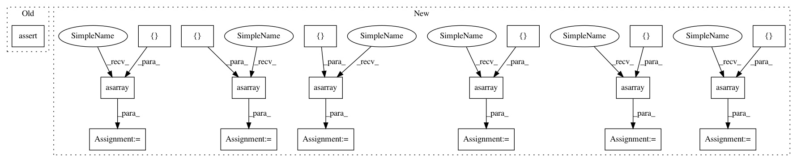

c8a9b2b2f14226567f2e1b42e7cf007b38c0fba3,tests/classifiers/test_pytorch.py,TestPyTorchClassifier,test_class_gradient,#TestPyTorchClassifier#,143
Before Change
grads = ptc.class_gradient(x_test, label=label)
self.assertTrue(np.array(grads.shape == (NB_TEST, 1, 1, 28, 28)).all())
self.assertNotEqual(np.sum(grads), 0)
def test_class_gradient_target(self):
// Get MNIST
(_, _), (x_test, _) = self.mnist
After Change
self.assertEqual(gradients.shape, (NB_TEST, 10, 1, 28, 28))
expected_gradients_1 = np.asarray([-1.5104107e-04, -1.4420391e-04, -8.5643369e-05, 4.2904957e-04,
4.6917787e-04, -3.3433505e-05, 4.3190207e-04, 5.4948201e-04,
9.0309686e-04, -1.3793766e-04, 6.4290554e-04, -2.8910500e-04,
-8.5047574e-04, -4.8866379e-04, 1.3007881e-03, 1.5724849e-04,
6.1079778e-04, -5.2589108e-05, -6.7920942e-04, -2.2616469e-04,
4.6133125e-04, 0.0000000e+00, 0.0000000e+00, 0.0000000e+00,
0.0000000e+00, 0.0000000e+00, 0.0000000e+00, 0.0000000e+00])
np.testing.assert_array_almost_equal(gradients[0, 5, 0, :, 14], expected_gradients_1, decimal=4)
expected_gradients_2 = np.asarray([-4.7446613e-04, -9.8460718e-05, -1.1919734e-04, -2.2912446e-04,
2.8542569e-04, -8.9842360e-06, 1.7257492e-04, 0.0000000e+00,
0.0000000e+00, -7.2422711e-04, -9.8898512e-05, 7.9051330e-04,
-3.9680302e-04, 7.3898572e-04, 1.3007881e-03, 7.1805675e-04,
7.7588821e-04, 9.9411258e-04, 4.4845918e-04, -1.9343558e-04,
-1.8357937e-04, 5.9276586e-04, -6.4391940e-04, 0.0000000e+00,
0.0000000e+00, 0.0000000e+00, 0.0000000e+00, 0.0000000e+00])
np.testing.assert_array_almost_equal(gradients[0, 5, 0, 14, :], expected_gradients_2, decimal=4)
// Test 1 gradient label = 5
gradients = classifier.class_gradient(self.x_test, label=5)
self.assertEqual(gradients.shape, (NB_TEST, 1, 1, 28, 28))
expected_gradients_1 = np.asarray([-1.5104107e-04, -1.4420391e-04, -8.5643369e-05, 4.2904957e-04,
4.6917787e-04, -3.3433505e-05, 4.3190207e-04, 5.4948201e-04,
9.0309686e-04, -1.3793766e-04, 6.4290554e-04, -2.8910500e-04,
-8.5047574e-04, -4.8866379e-04, 1.3007881e-03, 1.5724849e-04,
6.1079778e-04, -5.2589108e-05, -6.7920942e-04, -2.2616469e-04,
4.6133125e-04, 0.0000000e+00, 0.0000000e+00, 0.0000000e+00,
0.0000000e+00, 0.0000000e+00, 0.0000000e+00, 0.0000000e+00])
np.testing.assert_array_almost_equal(gradients[0, 0, 0, :, 14], expected_gradients_1, decimal=4)
expected_gradients_2 = np.asarray([-4.7446613e-04, -9.8460718e-05, -1.1919734e-04, -2.2912446e-04,
2.8542569e-04, -8.9842360e-06, 1.7257492e-04, 0.0000000e+00,
0.0000000e+00, -7.2422711e-04, -9.8898512e-05, 7.9051330e-04,
-3.9680302e-04, 7.3898572e-04, 1.3007881e-03, 7.1805675e-04,
7.7588821e-04, 9.9411258e-04, 4.4845918e-04, -1.9343558e-04,
-1.8357937e-04, 5.9276586e-04, -6.4391940e-04, 0.0000000e+00,
0.0000000e+00, 0.0000000e+00, 0.0000000e+00, 0.0000000e+00])
np.testing.assert_array_almost_equal(gradients[0, 0, 0, 14, :], expected_gradients_2, decimal=4)
// Test a set of gradients label = array
label = np.random.randint(5, size=NB_TEST)
gradients = classifier.class_gradient(self.x_test, label=label)
self.assertEqual(gradients.shape, (NB_TEST, 1, 1, 28, 28))
expected_gradients_1 = np.asarray([-2.39315428e-04, -2.28482357e-04, -2.39842790e-04, -6.74667899e-05,
5.54567552e-04, 5.59428358e-04, 3.71058501e-04, 4.47539205e-04,
5.91437332e-04, -1.86359655e-04, 2.78284366e-04, 1.86634657e-04,
-3.62139835e-05, 1.46655992e-04, 7.07449333e-04, 1.51086148e-04,
1.42195524e-04, 5.60022090e-06, -3.43588385e-04, -1.13900256e-04,
2.32334001e-04, 0.00000000e+00, 0.00000000e+00, 0.00000000e+00,
0.00000000e+00, 0.00000000e+00, 0.00000000e+00, 0.00000000e+00])
np.testing.assert_array_almost_equal(gradients[0, 0, 0, :, 14], expected_gradients_1, decimal=4)
expected_gradients_2 = np.asarray([-3.3879644e-04, 1.1766610e-04, 4.3186071e-04, 3.2926403e-04,
8.9179150e-05, 4.6644508e-04, 5.1162497e-04, 0.0000000e+00,
0.0000000e+00, -3.7474511e-04, -4.9881939e-05, 4.0110818e-04,
-1.9942035e-04, 3.7868350e-04, 7.0744933e-04, 5.2536512e-04,
1.0788649e-04, -3.9121151e-06, 2.3214625e-04, 1.5785350e-05,
1.0586554e-05, -2.1646731e-04, 8.7655055e-05, 0.0000000e+00,
0.0000000e+00, 0.0000000e+00, 0.0000000e+00, 0.0000000e+00])
np.testing.assert_array_almost_equal(gradients[0, 0, 0, 14, :], expected_gradients_2, decimal=4)
def test_class_gradient_target(self):
classifier = get_classifier_pt()
In pattern: SUPERPATTERN
Frequency: 3
Non-data size: 19
Instances
Project Name: IBM/adversarial-robustness-toolbox
Commit Name: c8a9b2b2f14226567f2e1b42e7cf007b38c0fba3
Time: 2019-08-19
Author: beat.buesser@ie.ibm.com
File Name: tests/classifiers/test_pytorch.py
Class Name: TestPyTorchClassifier
Method Name: test_class_gradient
Project Name: IBM/adversarial-robustness-toolbox
Commit Name: c8a9b2b2f14226567f2e1b42e7cf007b38c0fba3
Time: 2019-08-19
Author: beat.buesser@ie.ibm.com
File Name: tests/classifiers/test_pytorch.py
Class Name: TestPyTorchClassifier
Method Name: test_class_gradient
Project Name: IBM/adversarial-robustness-toolbox
Commit Name: 24cc9536e4969716b3080498426af8e47dee7907
Time: 2019-08-17
Author: beat.buesser@ie.ibm.com
File Name: tests/classifiers/test_tensorflow.py
Class Name: TestTFClassifier
Method Name: test_class_gradient
Project Name: IBM/adversarial-robustness-toolbox
Commit Name: fc81d77c1e18719b58c2437e8408972ad90ce547
Time: 2019-08-17
Author: beat.buesser@ie.ibm.com
File Name: tests/classifiers/test_keras.py
Class Name: TestKerasClassifier
Method Name: test_class_gradient